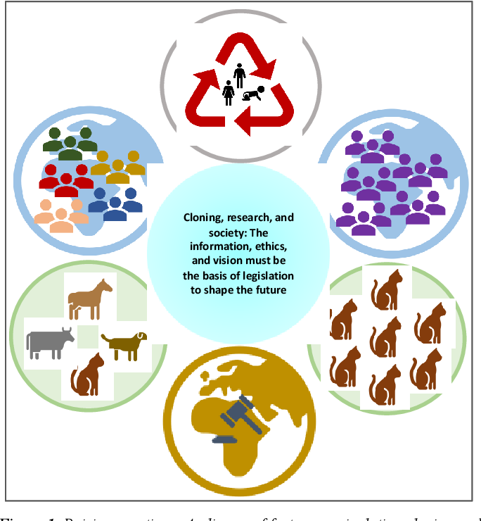
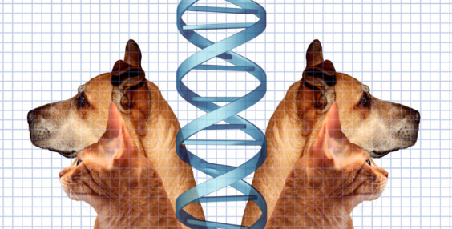
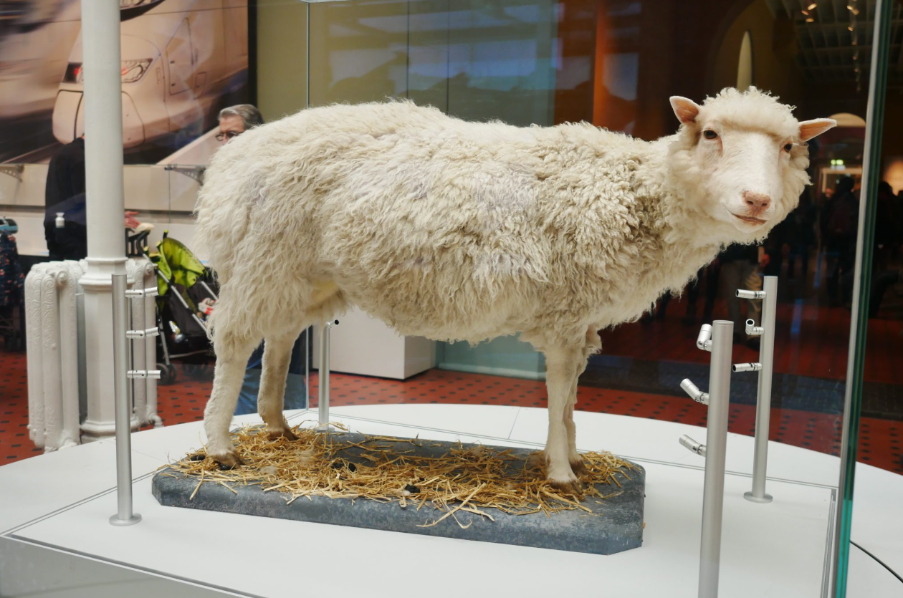

Scientific Background
Animal cloning is mainly done through Somatic Cell Nuclear Transfer (SCNT):
- A donor cell is taken from the animal you want to clone.
- The nucleus (which contains DNA) is removed.
- This nucleus is inserted into an egg cell that has had its own nucleus removed.
- The egg is stimulated to divide and grow into an embryo.
- The embryo is implanted into a surrogate mother, who gives birth to the clone.
This is how Dolly the sheep was cloned in 1996 — the first mammal cloned from an adult cell. Dolly lived for 6 years, proving cloning could work, but she also suffered from health problems, showing the risks.

Advantages
- Biodiversity preservation: Cloning can save endangered species like tigers, pandas, or rare cows. Scientists have already cloned endangered wildcats.
- Scientific progress: Cloning helps us understand genetics, aging, and diseases. It’s a tool for research.
- Agriculture: Farmers could reproduce animals with high productivity (more milk, better meat quality).
- Medical applications: Cloned animals can produce medicines in their milk or organs for transplantation.
- Consistency: Clones reduce genetic variation, which is useful in experiments.

Disadvantages
- Low success rate: Most cloned embryos fail. For every success, many attempts end in failure.
- Animal suffering: Failed clones often have deformities or die early, raising ethical concerns.
- Health problems: Clones may age faster or develop diseases earlier (like Dolly’s arthritis).
- Cost: Cloning requires advanced labs and is very expensive.
- Ethics: Many argue cloning interferes with nature, raises moral questions, and could lead to misuse if applied to humans.

Ethical Debate
- Supporters: say cloning can save species and advance medicine.
- Opponents: argue it causes suffering, is unnatural, and could be abused.
- Religions and cultures: often reject cloning because it challenges natural creation.
Future of Cloning
- Scientists are exploring gene editing (CRISPR) combined with cloning to fix genetic problems.
- Cloning could one day help restore extinct species (like mammoths).
- But ethical and financial barriers remain strong.